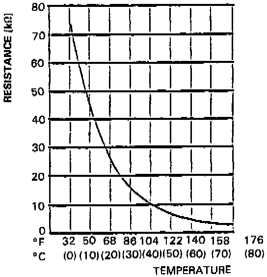

Operation CHARM
: Car repair manuals for everyone.
Home
>>
Acura
>>
1987
>>
Legend Coupe V6-2494cc 2.5L SOHC FI
>>
Repair and Diagnosis
>>
Engine, Cooling and Exhaust
>>
Cooling System
>>
Engine - Coolant Temperature Sensor/Switch
>>
Coolant Temperature Sensor / Switch HVAC
>>
Specifications
Coolant Temperature Sensor / Switch HVAC: Specifications
Automatic Climate Control:

Coolant Temperature Sensor
Temperature / Resistance Specifications